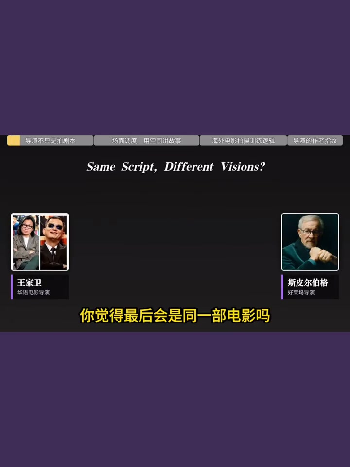
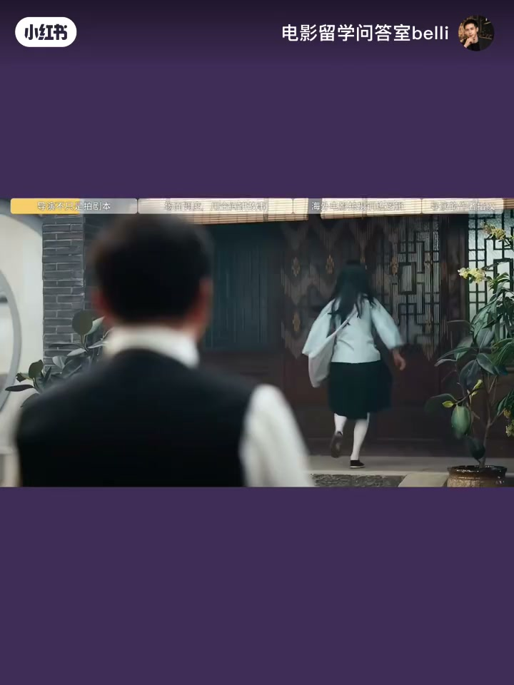
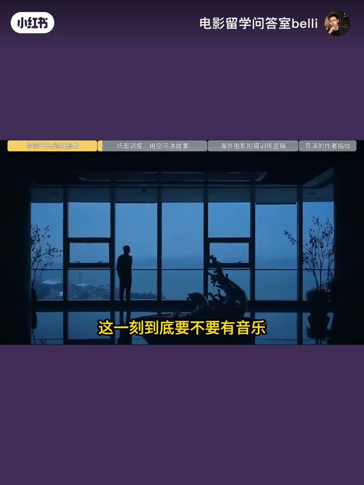
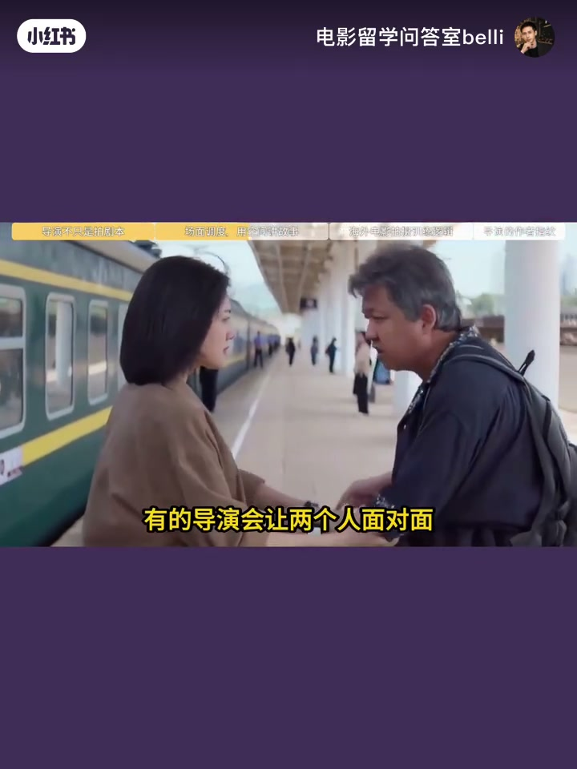
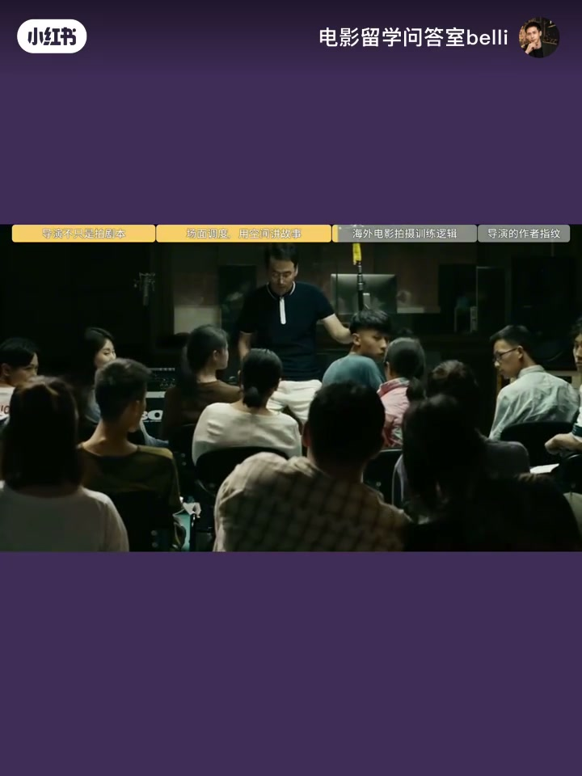
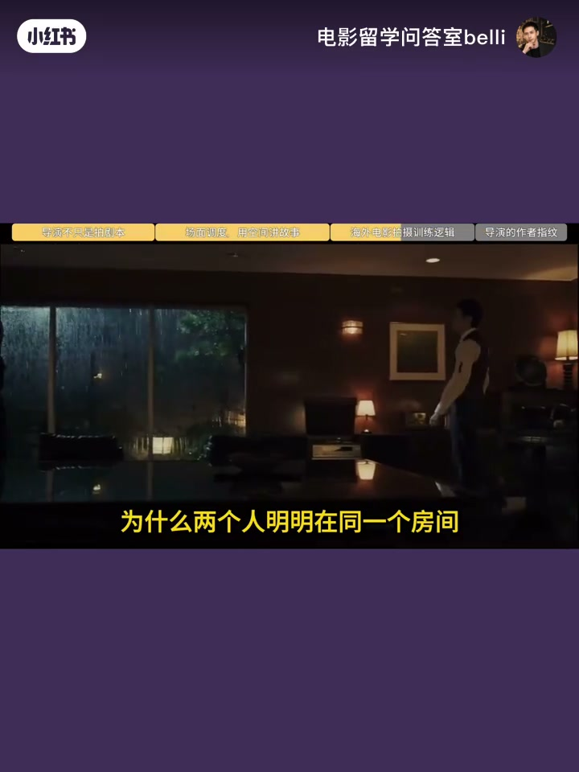
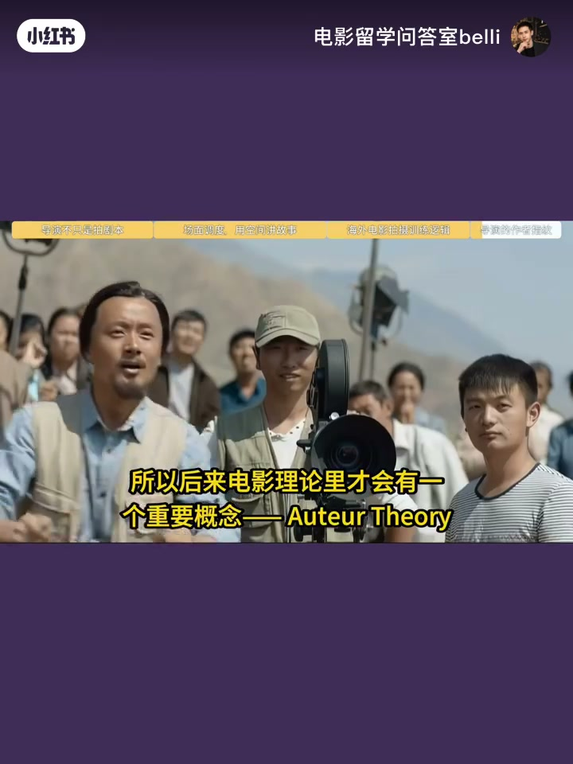
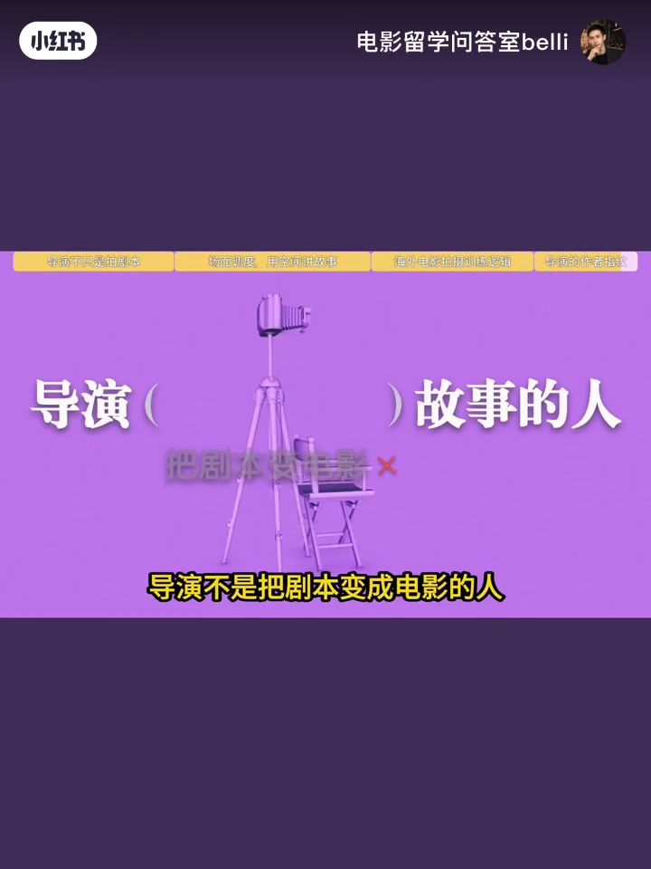

内容要点
黄金10集④：同一剧本给王家卫和斯皮尔伯格不会是同一部电影。剧本写动作，导演决定失落还是克制、跟拍还是留在原地、要不要音乐——判断进入演员、空间、镜头、声音与剪辑。
知识结构
剧本动作 vs 导演问题：失落/克制、跟拍/留下、音乐有无。
面对面爆发 vs 始终不对视——同一事件不同理解。
人物·空间·光·声·运动的组合本身在叙事。
Why this choice；风格可辨认如指纹。
导演不是执行剧本，是重新解释故事；场面调度与作者论是风格来源。
00:00–00:42导演=重新阐释剧本
同一剧本交给不同导演不会是同一部电影。关键词 interpretation：剧本写「他站在门口看她离开」，导演要问为什么站在那、观众看失落还是克制、镜头跟走还是留人、这一刻要不要音乐——事件不变，理解变了。
「导演真正重要的工作是重新解释剧本。」



00:42–01:15场面调度：用空间讲故事
同样一场告别：有人推到面对面情绪最满；有人让他们始终不对视——前者爆发，后者可能是「其实早就结束了」。你看到的不只是故事，是导演对故事的理解。Mise-en-scène 不只是站位，人物、空间、道具、光、声、运动如何组合本身就在讲故事。


01:15–01:50Why this choice?
为什么人物站在画面边缘？同房为何始终隔一段距离？空间本身可以是人物关系。海外课堂追问 Why this choice——「我觉得有感觉」不是最终答案，要说清为人物、情绪和主题服务什么。
「Why this choice？这个选择究竟为人物、情绪和主题服务什么？」

01:50–02:08作者指纹
Auteur theory（作者论）：导演成熟后形成自己的表达方式——空间、节奏、人物关系与沉默方式可认人。导演不是把剧本变成电影的人，是在重新解释这个故事的人。


完整转录（61段）
Whisper medium · 中文 · 已做术语校正，仍可能有识别误差。
同一个剧本交给王家卫和斯皮尔伯格
你觉得最后会是同一部电影吗
当然不会
因为真正决定一部电影长什么样的
从来不只是剧本
导演真正重要的工作是重新解释剧本
电影里有一个很重要的词叫interpretation
导演阐释剧本写
他站在门口看著他离开
这只是一个动作
但导演接手以后
问题就完全变了
他为什么站在那里
观众应该看见他的失落还是他的克制
是让镜头跟著他离开
还是留在原地
看著他一个人站在那里
甚至这一刻到底要不要有音乐
这些选择都不会改变他离开了这个世界
但会改变观众对这场戏的理解
这就是导演
所以导演不是简单的执行剧本
而是在剧本的基础上做出一连串创作判断
这种判断会进入演员空间镜头声音
甚至剪辑节奏
比如同样是一场告别
有的导演会让两个人面对面把情绪推到最满
有的导演却可能让他们始终没有真正看向对方
前者强调的是情绪爆发
后者表达的可能是
两个人其实早就结束了
只是这一刻才意识到
所以你看到的已经不只是一个故事
而是导演对这个故事的理解
在电影学院的训练里
我们经常会分析一个概念
Mise-en-scène场面调度
它绝不只是演员站在哪里
人物、空间、道具、光线、声音、运动
这些元素之间怎么组合本身就在讲故事
为什么人物偏偏站在画面的边缘
为什么两个人明明在同一个房间
却始终隔著一段距离
空间本身就可以成为人物关系
我在海外电影学习时
老师很喜欢追问一句
Why this choice?
为什么一定要这样拍
因为我觉得这样比较有感觉
在电影创作里不是最终答案
你需要知道
这个选择究竟为人物、情绪和主题服务什么
所以后来电影理论里才会有一个重要概念
Auteur theory 作者论
导演真正成熟以后
会慢慢形成属于自己的表达方式
你甚至不用看署名
就可能从他的空间、节奏、人物关系和沉默方式里
认出是谁拍的
导演不是把剧本变成电影的人
他是在重新解释这个故事的人